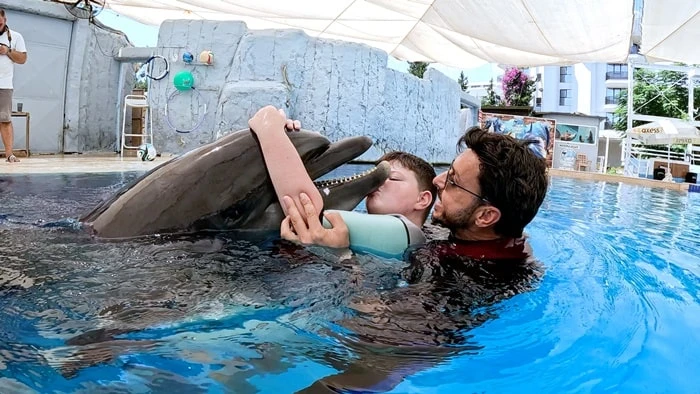
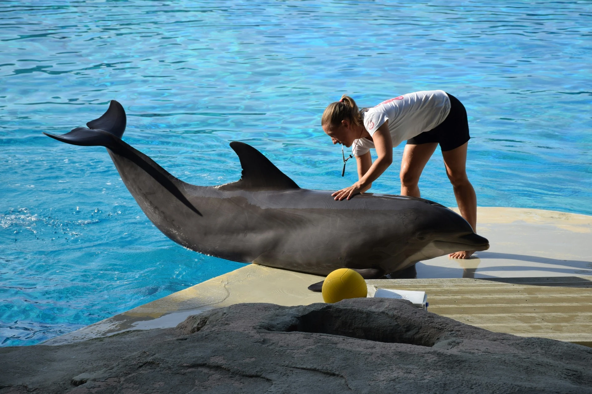
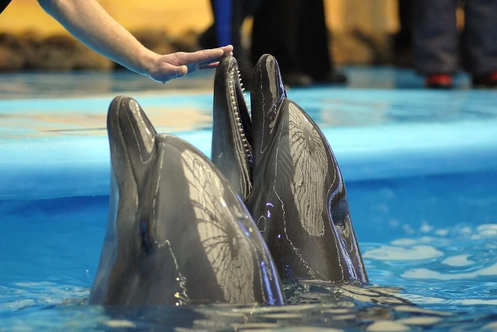

Kimler Icin?
Otizm spektrumu, gelisimsel gecikmeler ve ogrenme guclukleri.
Yunuslarla uzman eşliğinde kurulan kontrollü etkileşim ile fiziksel, duygusal ve sosyal gelişimi destekleyen programlarımız hakkında bilgi alın.
Dolphin therapy, yunuslarla kontrollü ve uzman eşliğinde kurulan etkileşim yoluyla fiziksel, duygusal ve sosyal gelişimi destekleyen tamamlayıcı bir yaklaşımdır.
Otizm spektrumu, gelisimsel gecikmeler ve ogrenme guclukleri.
Dikkat sorunlari, koordinasyon guclukleri ve sosyal iletisim becerileri.
Motivasyon artisi, ozguven destegi ve su ici hareketle denge gelisimi.
Dolphin therapy tıbbi tedavilerin yerine geçmez; uygun durumlarda destekleyici olarak tercih edilir.

Programların amacı katılımcının motivasyonunu artırmak ve öğrenme sürecini daha keyifli bir ortamda desteklemektir.
Dolphin therapy ile ilgili olumlu deneyim paylaşımları bulunsa da bilimsel araştırmalar halen sınırlıdır. Bu yaklaşım mucizevi bir tedavi olarak değil, mevcut tıbbi ve eğitimsel programların yanında ek destek olarak değerlendirilmelidir.


Program seçiminde katılımcı güvenliği, hijyen koşulları, acil durum planları ve yunusların etik standartlarda bakımının sağlanması temel kriterlerdir.
Programın içeriği, süresi ve hedefleri önceden netleştirilmeli; katılımcının sağlık durumu mutlaka uzman ekip tarafından değerlendirilmelidir.
Bu alanı parkınızı tanıtan videolar için ayırdık. Kısa bir genel tanıtım videosu bile sayfanın güvenini ve etkisini ciddi şekilde artırır.